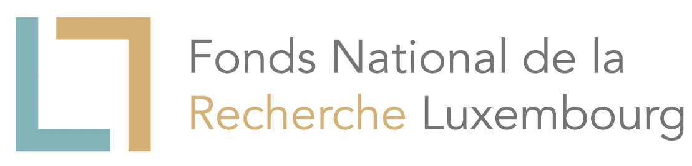

Phonon website
Visualize phonon vibrational modes
This project aims to provide a simple way to visualize the lattice vibrations of different materials. The temperature of a material is related to the agitation of its atoms. The atoms can move in any of the three cartesian directions. Combining the different possible ways the atoms can vibrate we obtain the eigenvectors. Each mode has associated a frequency of vibration that is related with the forces between the atoms.
How to use?
In the phonon section you can click on any point in the phonon dispersion and see an animation of how the atoms vibrate according to that particular mode. By default you can visualize the phonon dispersion of a few selected materials we calculated plus the ones calculated by A. Togo for phonodb. If you want to see your own calculations, we currently support phonon calculations from Abinit, Quantum Espresso and phononpy.
phonopy
You can visualize your own phonopy files by clicking on the Choose files button and selecting a band.yaml file. The following options should be present in the band.conf file:
EIGENVECTORS = .TRUE.
BAND_CONNECTION = .TRUE.
BAND_LABELS = Gamma M K
BAND = (x1,y1,z1) (x2,y2,z2) (x3,y3,z3)This only works with the newer versions of phonopy as new tags were added to 'band.yaml' to have information about the atomic positions and the supercell.
Abinit
To read a phonon dispersion from Abinit you need python scripts to convert the phonon dispersion data to the internal .json format used by the website.
The recommended way to do so is to use abipy. Once you have generated a DDB file, you can create a JSON file with:
$ abiopen.py mp-149_DDB
In [1]: phbst, phdos = abifile.anaget_phbst_and_phdos_files()
In [2]: phbst.phbands.view_phononwebsite()If you already have a PHBST.nc netcdf file produced by anaddb you can visualize it with:
$ abiview.py phbands example_PHBST.nc -webAlternatively you can use the scripts provided in the Github page. To install them just do:
$ python setup.py install --userIn the folder where you ran anaddb you will find a netCDF file (if you compiled Abinit with netCDF support) with the name anaddb.out_PHBST.nc. To convert it to .json format just run:
$ read_anaddb_phonon.py anaddb.out_PHBST.nc <name_of_your_material>You can then select the resulting .json file with the Choose files button on the phononwebsite.
Quantum Espresso
To read a Quantum Espresso calculation you need two files <prefix>.scf and <prefix>.modes. The first one is the input file for pw.x the second one can be generated with dynmat.x. The file that should be used is the one set with the 'filout' tag in the dynmat input file as in it the modes are normalized with the atomic masses. After installing the python scripts (same as in the case of an Abinit calculation) you can obtain the .json files:
$ read_qe_phonon.py prefix <name_of_your_material>You can then select the resulting .json file with the Choose files button.
VASP
To read a VASP calculation you need the vaspout.h5 file containing a phonon dispersion calculation.
You can find the instructions of how to compute the phonon dispersion in the VASP wiki.
$ read_vasp_phonon.py vaspout.h5 <name_of_your_material>You can then select the resulting .json file with the Choose files button.
Pages using this visualization tool
This visualization tool is currently being used in other websites:
Features
You can export a animated .gif with a particular mode using the gif button in the Export movie section.
If you want to share your own data with someone else you can add to the url tags with the following format:
http://henriquemiranda.github.io/phononwebsite/phonon.html?tag1=a&tag2=bThe available tags are:
json = link to a json file
yaml = link to a yaml file
name = name of the materialHere are some examples of what can be added to the website link:
- ?yaml=http://henriquemiranda.github.io/phononwebsite/tests/phonopy/band.yaml
- ?json=http://henriquemiranda.github.io/phononwebsite/localdb/graphene/data.json
You are free to use all the images generated with this website in your publications and presentations as long as you cite this work (a link to the website is enough). For the license terms of the data from phonodb please refer to their website.
In polar materials the LO-TO splitting is missing in the phonodb.
Modify the website
Change the colorsThe default colors of the atoms are the same ones used in jmol. Currently we don't provide a web interface to change them. If you still would like to change the colors, you can checkout locally the git repository from Github. The colors of the atoms can be changed in atomic_data.js file inside the js/ folder. The colors of the bonds and arrows can be changed in vibcrystal.js in the variables this.arrowcolor and this.bondscolor respectively.
To bundle the code i.e. join all the javascript files in the src folder into a single javascript module run rollup -c.
You can run a http server locally (Mac or Linux) with python -m http.server (python 3) and visit the page on your web browser in the address: http://localhost:8000.
File Format
Here you can find a short description of the internal .json format used to show the phonon dispersions and animations on the website.
name: name of the material that will be displayed on the website (string)
natoms: number of atoms (integer)
lattice: lattice vectors (3x3 float array)
atom_types: atom type for each atom in the system (array strings)
atom_numbers: atom number for each atom in the system (array integers)
formula: chemical formula (string)
repetitions: default value for the repetititions (array 3 integers)
atom_pos_car: atomic positions in cartesian coordinates (Nx3 float array)
atom_pos_red: atomic positions in reduced coordinates (Nx3 float array)
highsym_qpts: list of high symmetry qpoints (Nx3 float arraay)
qpoints: list of q-point in the reciprocal space (Nx3 float array)
distances: list distances between the qpoints (Nq float array)
eigenvalues: eigenvalues in units of cm-1 (Nqx(N\*3))
vectors: eigenvectors (NqxN)
line_breaks: list of tuples with start and end of each segment (Optional)Authors
This project is the continuation of the work of Raoul Weber during an internship in the University of Luxembourg for 2 months in the Theoretical Solid State Physics group under the supervision of Ludger Wirtz and technical help from me.
I decided to continue the project by optimizing the implementation, cleaning up the design and replacing JSmol by a self made applet using Three.js and WebGL called VibCrystal. Currently the website works also as a web application which means the user can visualize his own calculations made with phonopy.
My personal webpage:
http://henriquemiranda.github.io
Contact me:
miranda.henrique at gmail.com
Aknowledgments & Funding
Ludger Wirtz for the original idea and important scientific advices. Atsushi Togo the creator of phonopy for providing phonon dispersion data from his phonodb phonon database. José Pedro Silva for very helpful advices on technical issues and the best web technologies to use. Guido Petreto and Matteo Giantomassi for many insightful comments, debugging, feature suggestions and the interface with abipy. and from the for the implementation of the Vesta mode.
VASP Software GmbH (2019-present): http://www.vasp.at
Fonds National de la Recherche Scientifique (2017-2019): http://www.fnrs.be/

Université Catholique de Louvain (2017-2019): https://uclouvain.be

Fonds National de la Recherche Luxembourg (2013-2017): http://www.fnr.lu/

University of Luxembourg (2013-2017): http://wwwen.uni.lu/
Contribute
The project is under development!
You can leave your suggestions and feature requests here:
https://github.com/henriquemiranda/phononwebsite/issues
If you would like to see some of your calculations published on this website please contact me.
Software used for this project
- WebGL visualization using
Three.js: http://threejs.org/ - phonon dispersion using
highcharts: http://www.highcharts.com/ - export animation using
CCapture.js: https://github.com/spite/ccapture.js - gif animation is uses
gif.js: http://jnordberg.github.io/gif.js/ Abinit: http://www.abinit.org/Abipy: https://github.com/abinit/abipyQuantum Espresso: http://www.quantum-espresso.org/phonopy: http://atztogo.github.io/phonopy/